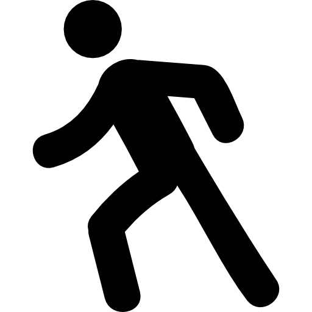

flight
 Pour voir notre selection
Pour voir notre selectionPour voir les conseils de nos spécialistes
Pour voir notre selectionLa Grèce, en forme longue la République hellénique (en grec : Ελλάδα / Elláda, /eˈlaða/, ou officiellement Ελληνική Δημοκρατία / Ellinikí Dimokratía, [Démocratie hellénique] ; en grec ancien et en katharévousa Ἑλλάς / Hellás), est un pays d’Europe du Sud et des Balkans. On la désigne parfois par le terme Hellade6,7.
D'une superficie de 131 957 km2 pour un peu moins de onze millions d'habitants, le pays partage des frontières terrestres avec l’Albanie, la Macédoine du Nord, la Bulgarie et la Turquie et des frontières maritimes avec Chypre, l'Albanie, l'Italie, la Libye, l'Égypte et la Turquie (cette dernière est la source du contentieux gréco-turc en mer Égée). La mer Ionienne à l'ouest et la mer Égée à l'est, parties de la mer Méditerranée, encadrent le pays. Le cinquième de son territoire est constitué de plus de 9 000 îles et îlots, près de 200 étant habités. De plus, 80 % de son territoire est constitué de montagnes. La plus haute est le mont Olympe qui culmine à 2 917 m.
La Grèce est considérée comme le berceau de la civilisation occidentale, patrie des arts (théâtre, architecture), de la politique (Athènes est le berceau de la démocratie), de la philosophie (stoïcisme, épicurisme, aristotélisme) et des sciences (mathématiques, physique, médecine). La Grèce antique a légué à l'Europe un patrimoine culturel et linguistique colossal.
Que vous souhaitiez visiter Athènes, découvrir le Péloponnèse et les sites archéologiques d‘Epidaure et d’Olympie. Ou alors que vous préfériez passer des vacances à la mer dans les Cyclades (Santorin) ou l’archipel du Dodécanèse (Rhodes), vous allez vite voir qu’il y a une multitude d’endroits à ne pas manquer lors de votre voyage!
La gastronomie grecque est caractérisée par des plats de style méditerranéen, avec des influences du Moyen-Orient, de la France et de l’Italie1. Voici quelques aliments traditionnels grecs que vous devez manger en Grèce2:
La période la plus chaude de l’année, tant sur le continent que dans les îles grecques, va de fin mai à début octobre. Pendant ces mois, tout le pays est ensoleillé et chaud, et la baignade devient plus facile car les eaux se réchauffent.
En mai, les températures de l’océan commencent à augmenter et de juillet à début septembre, elles sont les plus chaudes. C’est la meilleure période pour visiter la Grèce si vous recherchez un temps chaud et de bonnes conditions de baignade.
Lorsque la plupart des voyageurs essaient de décider quelle est la meilleure période pour visiter la Grèce, ils pensent d’abord à la météo. C’est tout à fait naturel ! Personne n’a envie de subir la pluie pendant toutes ses vacances. Nous allons donc commencer ce guide par la météo en Grèce.
Printemps : Mi-mars à mi-juin
Le printemps en Grèce est souvent considéré comme la meilleure période pour visiter le pays. Les foules de touristes ne sont pas encore arrivées et un calme paisible règne dans ce paradis méditerranéen. Vous pouvez avoir les meilleures plages de Grèce pour vous tout seul !
Bien qu’il fasse encore un peu frais sur le continent, à partir de la mi-avril, les îles comme la Crète, Santorin et Rhodes profitent du soleil. Enfin, après l’hiver, la température de l’océan autour des îles du sud de la Grèce est suffisamment élevée pour permettre la baignade.